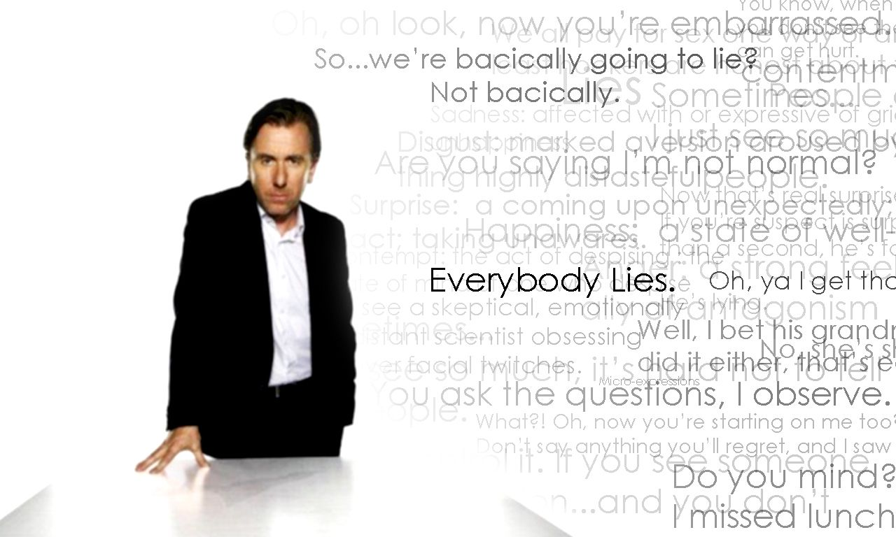

the world's leading deception expert
The show is inspired by the work of Paul Ekman, a specialist on facial expressions and a professor emeritus of psychology at the University of California San Francisco School of Medicine. Ekman has been an advisor to police departments and anti-terrorism groups. He was a scientific consultant in the production of the series. The lead character of Lie to Me, Cal Lightman(Tim Roth), is based on Ekman.